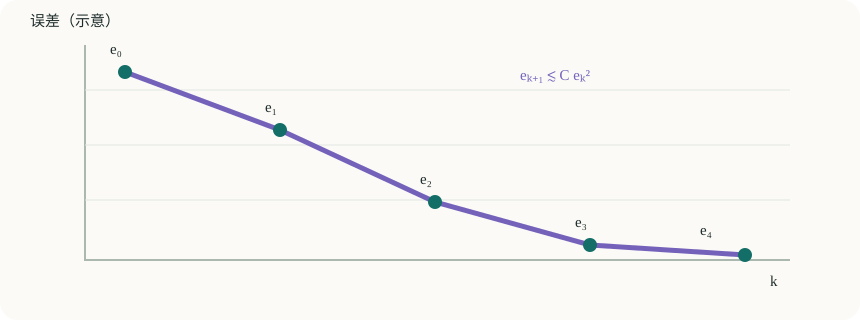

3.3.2 Newton 法：为什么局部可以二次收敛
Newton 法用 Hessian 校正梯度方向，能在解附近迅速消除误差；但 Hessian 若不正定，Newton 方向甚至可能不是下降方向。
Newton 方向与二阶模型
在当前点 xk，对目标函数作二阶 Taylor 近似。若 Hessian Hk=∇²f(xk) 非奇异，令二次模型的梯度为零，得到 Newton 方向 pkN。实际实现应解线性系统 HkpkN=−gk，而不是显式计算矩阵逆。
若 Hk 正定，则 gkᵀpkN=−gkᵀHk−1gk<0，Newton 方向是下降方向。但 Hessian 不定时，这个结论不成立。
局部二次收敛需要哪些假设
设 x* 是局部解，满足 ∇f(x*)=0 且 H*=∇²f(x*) 正定。再假设 Hessian 在 x* 的邻域内 Lipschitz 连续，并从足够接近 x* 的初始点开始。则纯 Newton 迭代使用完整步长 αk=1 时，迭代点局部二次收敛：
这里 C 在解的某个邻域内固定。正定 Hessian 保证局部模型具有正确的曲率；Lipschitz Hessian 控制 Taylor 余项；初始点足够近则保证迭代留在这个局部邻域中。若步长通过 Wolfe 线搜索选择，并且算法总是先尝试 α=1，那么足够靠近解后，单位步长最终会被接受。
误差为什么会被平方
Newton 方程让当前点处的一阶模型残差精确抵消：gk+HkpkN=0。真实梯度与这个局部线性预测之间的差，来自 Hessian 沿着短线段变化的部分。若 Hessian Lipschitz 连续，这个变化量与步长长度成正比；再乘一次步长，误差就成为二阶量。
因此局部误差满足 ek+1≤Cek²。若当前误差已经是 10⁻²，下一轮在常数适当时就可能到 10⁻⁴；误差足够小时，正确位数会快速增加。

为什么远离解时不能盲目走完整步
局部定理不保证任意初始点都能直接使用 Newton 步。若当前 Hessian 不定，Newton 方向可能使目标上升；即使 Hessian 正定，远离解时二次模型也可能不准确。实际算法常结合线搜索或信赖域：线搜索可能修改 Hessian 以获得下降方向，再寻找可接受步长；信赖域则限制模型只在局部区域内指导步子。
核心区分：“Newton 局部二次收敛”是一条有条件的局部速度结论，不是全局收敛保证。全局化机制负责把迭代安全地带入局部收敛区域。
交互：观察 Newton 误差递减
使用 f(x)=½x²+¼x⁴，其唯一极小点为 0，Hessian 在邻域内 Lipschitz 且 f″(0)=1。改变起点，执行完整 Newton 步，观察误差比值。
实时计算
Python：可复现的数值检查
第一部分展示满足局部定理条件的光滑一维函数；第二部分构造 Hessian 为负的点，验证 Newton 方向可能不是下降方向。
"""Local Newton convergence and an indefinite-Hessian non-descent example."""
def f(x: float) -> float:
return 0.5 * x**2 + 0.25 * x**4
def grad(x: float) -> float:
return x + x**3
def hess(x: float) -> float:
return 1.0 + 3.0 * x**2
def newton(x: float, steps: int = 6):
history = [x]
for _ in range(steps):
x = x - grad(x) / hess(x)
history.append(x)
return history
if __name__ == "__main__":
history = newton(1.0)
errors = [abs(x) for x in history]
ratios = [errors[k + 1] / (errors[k] ** 2) for k in range(3)]
print("Newton iterates:", history[:5])
print("e[k+1] / e[k]^2:", ratios)
assert errors[1] < errors[0]
assert errors[3] < 0.02
assert ratios[-1] < ratios[0]
x = 0.1
g = 4.0 * x**3 - 2.0 * x
h = 12.0 * x**2 - 2.0
p = -g / h
assert h < 0.0
assert g * p > 0.0 # Newton direction is not a descent direction.思考：如果 Hessian 在解处正定但不 Lipschitz 连续，二次收敛证明中哪一步会失去控制？如果 Hessian 奇异，Newton 线性系统会发生什么？